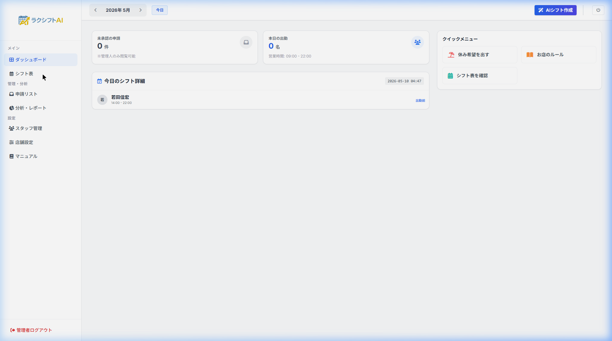
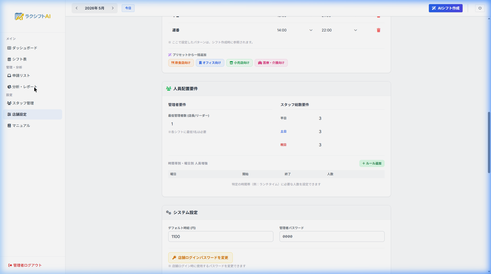
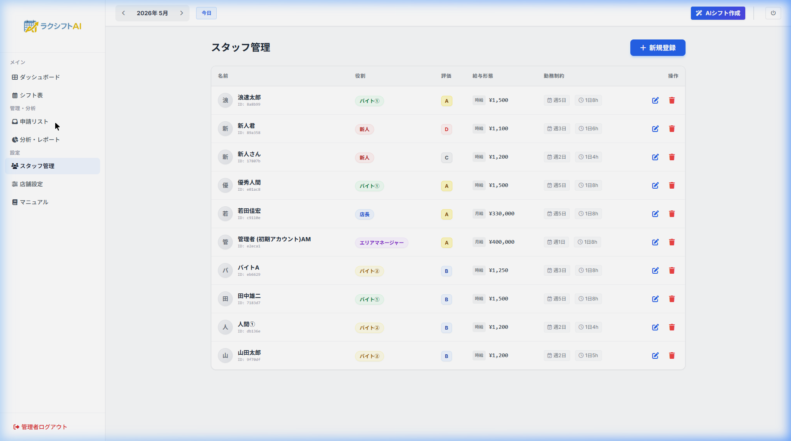
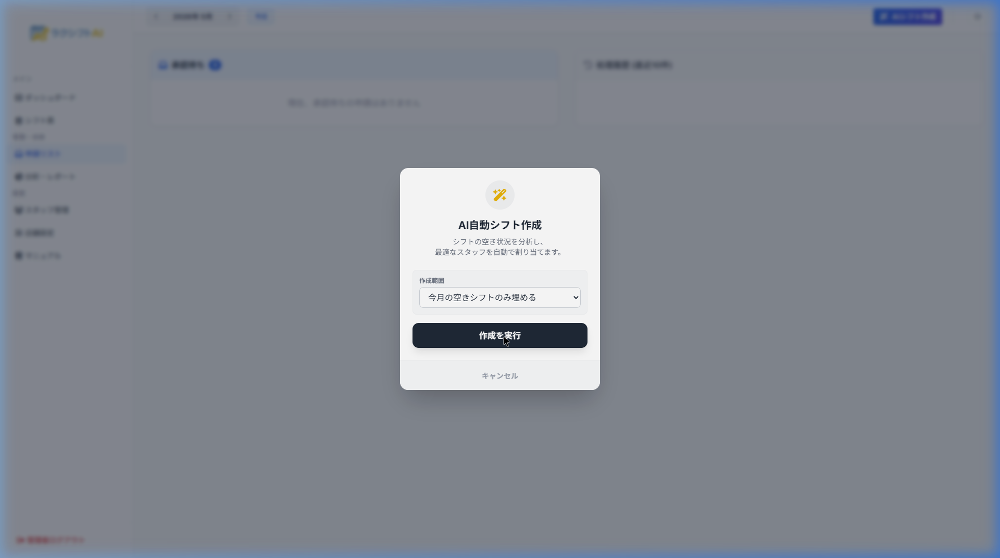
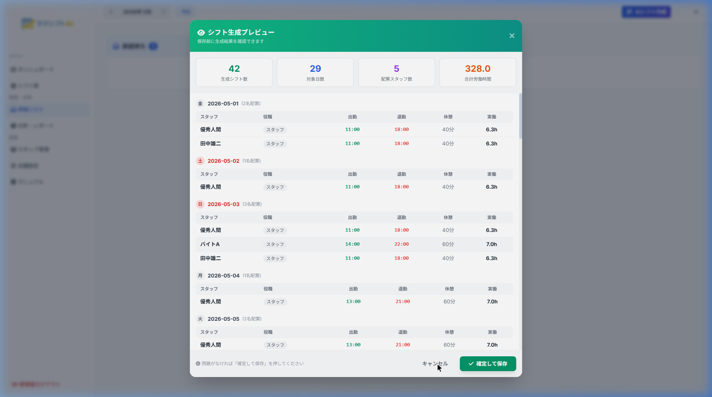
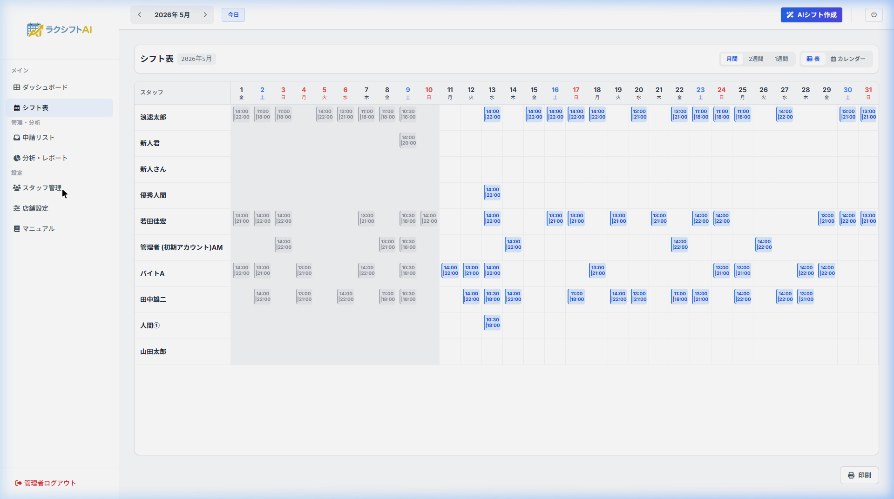
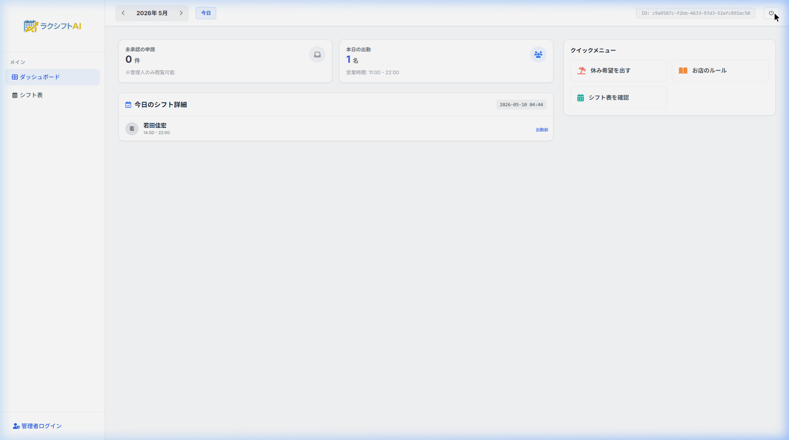

ボタン1つで、シフト作成がおわる。
面倒なシフト作成を、AIが数十秒で自動作成。
労働基準法も自動チェック。もう「シフトパズル」で悩みません。
シフト作成は、店長の大きな負担になっています
毎月数時間〜十数時間。希望を見ながらの手作業でヘトヘトに。
人手不足・連勤・法令違反…。気づかず組んでしまいがち。
特定の人に偏る、希望が通らない。スタッフの不満に。
「AIが最適なシフトを自動で組んでくれる」クラウドサービスです
スタッフの希望・勤務条件、お店の営業時間や必要人数を登録しておくだけ。
あとは「AIシフト作成」ボタンを押すだけで、数理最適化AIが
過不足なく・法令を守ったシフトを自動作成します。

むずかしい操作は一切なし。順番に設定するだけです
営業時間・定休日・シフトパターン（早番/遅番など）・必要人数を登録。
スタッフの役職・評価・給与形態・勤務条件・休み希望を登録。
ボタンを押すだけ。数十秒で自動作成→プレビュー確認→保存。
お店全体のルールを決めます（1回設定すればOK）
| 設定項目 | 内容 |
|---|---|
| 営業時間・定休日 | 曜日ごとの開店/閉店。24時間営業も対応 |
| シフトパターン | 早番・遅番・夜勤などの時間と必要人数 |
| 管理者の配置 | 各パターンに店長/リーダーを何人入れるか |
| 翌休（夜勤対策） | 夜勤の翌日を自動でお休みに（連勤防止） |
| 過剰配置 | 「ぴったり」か「多めでもOK」を選択 |

スタッフ一人ひとりの条件を登録します

| 項目 | AIへの効き方 |
|---|---|
| 役職 | 店長/リーダーは責任者として優先配置 |
| 評価(A〜D) | D＝新人は先輩(メンター)と必ず同時間帯に |
| 給与形態 | 月給＝固定費として優先配置／時給＝調整役 |
| 最低/最大出勤日数 | 「週N日・月N日」を守って配置 |
| 連勤上限・最大時間 | 働きすぎを自動でブロック |
| 希望曜日・休み希望 | できる限り尊重して配置 |
ボタンを押すだけ。確認して保存すれば完成です


見やすい表・カレンダー表示。手直し・印刷・PDF保存も自由自在

現場のリアルな悩みに合わせて、AIがきめ細かく配置します
| 機能 | できること |
|---|---|
| 🌙 翌休（夜勤連勤防止） | 夜勤に入った翌日を自動でお休みに。夜勤の2連勤を確実に防ぎます |
| 👔 管理者の配置人数 | 「早番は必ず店長1名」などパターンごとに責任者を確保（あけしめ対策） |
| ⚡ 過剰配置ポリシー | OFF＝必要数ぴったりで人件費を抑制／ON＝多めに入れて全員の出勤日数を確保 |
| 💰 月給/時給の最適化 | 月給（固定費）を優先活用しつつ、時給は繁忙帯に投入して人件費を最小化 |
| 🎓 新人のOJT配慮 | 評価Dの新人は必ず先輩(メンター)と同じ時間帯に配置 |
| 🏢 本部管理モード | 複数店舗のシフト・人件費・スタッフ状況を本部から横断で閲覧 |
| 🔒 セカンドPIN認証 | 契約ID＋パスワードに加え、PINで二重ロック。責任者交代も安心 |
人件費・出勤日数をグラフで把握。無駄と偏りが一目でわかります

作成時間の大幅短縮と、人件費・法令リスクの改善が期待できます
※ 効果はお店の規模・運用により異なります。数値は一般的な導入イメージです。
お店の規模に合わせて選べます
| プラン | 対象 | スタッフ上限 | 主な機能 |
|---|---|---|---|
| Standard | 小規模店舗 | 〜10名 | AIシフト作成・シフト表・休み希望 |
| Pro（人気） | 中規模店舗 | 〜50名 | Standard＋分析レポート・各種かしこい機能 |
| Premium | 大規模・多店舗 | 無制限 | Pro＋本部管理モード・優先サポート |
導入・操作説明もサポートします。
「シフト作成の悩み」を、今日から手放しましょう。
ボタン1つで、シフト作成がおわる。